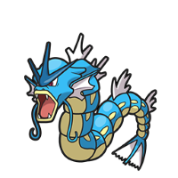
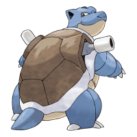
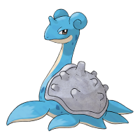
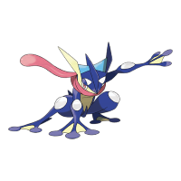

Garados

Turtok

Lapras

Quajutsu
Willkommen zurück im Zoo Zürich! Wenn Sie Wasser-Pokemons lieben, dann haben wir auch für Sie eine tolle Auswahl. Auf unserer Website zeigen wir nur die vier beliebtesten Wasser-Typen, darunter das ruhige Lapras, das wendige Quajutsu, das mächtige Turtok und das schillernde Garados.
Aber das ist noch lange nicht alles, was wir zu bieten haben. In unserem Zoo gibt es viele weitere Wasser-Typen, die
darauf warten, von Ihnen entdeckt zu werden. Schauen Sie vorbei und erleben Sie, wie sich diese faszinierenden
Kreaturen im Wasser tummeln und ihre beeindruckenden Fähigkeiten zum Besten geben. Wir sind sicher, dass Sie eine
unvergessliche Zeit haben werden!